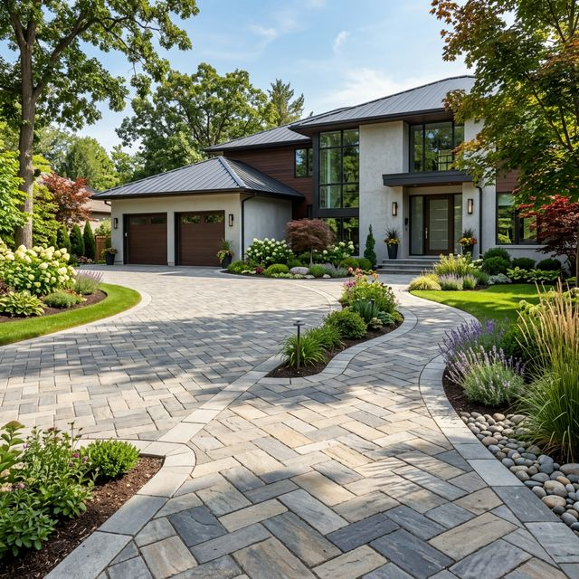

Pavaje & Peisagistică
Curtea ta este cartea de vizită a casei. Oferim soluții complete de pavare, de la pregătirea stratului suport la montajul artistic al dalelor.

view_module
Modele Personalizate
Realizăm diverse modele și combinații de culori pentru a se potrivi perfect cu arhitectura casei tale.
water_drop
Drenaj Eficient
Ne asigurăm că pantele sunt corect executate pentru a evita acumularea apei și înghețul sub pavaj.